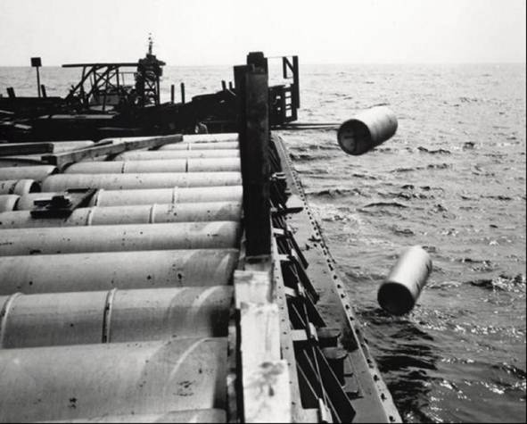
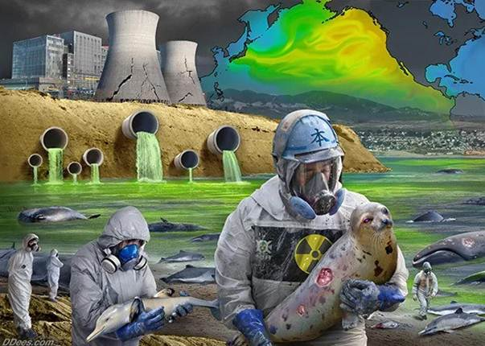

<!DOCTYPE html>
<html lang="en">
<head>
    <meta charset="UTF-8">
    <meta http-equiv="X-UA-Compatible" content="IE=edge">
    <meta name="viewport" content="width=device-width, initial-scale=1.0">
    <title>Waste Management</title>
    <link rel="stylesheet" href="project.css">

    <style>
    
    .headingWM:hover{
        color: steelblue;
    }
    
    </style>
    

</head>

</html>

<body>

    <div class="menu">
    
        <div class="leftmenu">
            
       </div>

        <div class="rightmenu">
            
            
            <a href="index.html" target="_blank">HOME</a>
          
            <a href="contact.html" target="_blank">CONTACT</a>
            <a href="about.html" target="_blank">ABOUT</a>
            

        </div>

    </div>  


    <div class="headingWM">
        <h1>Ocean Dumping</h1>
    </div>

         
    <main>
        <section class="firstleftWM"> 
            <h1>Japan's two-faced attitude to radioactive waste.</h1>
            <p>Japan's recent announcement of a decision to release more than 1 million tons of
              contaminated water from its wrecked nuclear power plant into the Pacific Ocean has
              reminded many people of Russia's use of the seas as a dumping ground for radioactive 
              waste, confirmed in 1993 and something that shocked the international community.</p>

            <p>What was notable then was that Japan was on the frontline of protests against Russia, demanding a stop to the dumping of radioactive waste.</p>
            <p>This event is provoking criticism that Tokyo now has a two-faced attitude to radioactive waste dumping.</p>
        </section>
   
        <section class="firstrightWM">
            <figure>
                
            </figure>
        </section>
     </main>


      
     <main>
        <section class="secondleftWM"> 
            <h1>What is the Marine Protection, Research and Sanctuaries Act?</h1>
            <p>In October 1972, Congress enacted the Marine Protection, Research and Sanctuaries Act (MPRSA), sometimes referred to as the Ocean Dumping Act, declaring that it is the policy of the United States to regulate the dumping of all materials which would adversely affect human health, welfare or amenities, or the marine environment, ecological systems or economic potentialities.</p>
            <p>The MPRSA implements the requirements of the Convention on the Prevention of Marine Pollution by Dumping of Wastes and Other Matter of 1972, known as the London Convention. The London Convention is one of the first international agreements for the protection of the marine environment from human activities.</p>
        </section>
     </main>


     <main>
        <section class="threeleftWM"> 
            <h1>How does EPA implement the MPRSA?</h1>
            <p>Under the MPRSA, EPA is responsible for establishing criteria for reviewing and evaluating permit applications. EPA is responsible for issuing ocean dumping permits for materials other than dredged material. In the case of dredged material, the U.S. Army Corps of Engineers (USACE) is responsible for issuing ocean dumping permits, using EPA’s environmental criteria. Permits for ocean dumping of dredged material are subject to EPA review and written concurrence. EPA is also responsible for designating and managing ocean disposal sites for all types of materials.</p>
            <p>EPA and USACE together develop site management and monitoring plans (SMMPs) for each designated ocean dredged material disposal site. EPA’s Ocean Dumping Management Program, often in coordination with USACE, conducts oceanographic surveys at these ocean disposal sites to evaluate environmental conditions at the site and to determine what management actions may be needed.</p>
        </section>
   
        <section class="threerightWM">
            <figure>
                
            </figure>
        </section>
     </main>


     <main>
        <section class="fourleftWM"> 
            <h1>What materials cannot be dumped in the ocean?</h1>
            <ul>
                <li>The MPRSA and EPA’s ocean dumping regulations prohibit ocean dumping of certain materials, such as:</li>
                <li>high-level radioactive wastes.</li>
                <li>radiological, chemical and biological warfare agents</li> 
                <li>persistent inert synthetic or natural materials which may float or remain in suspension in the ocean in such a manner that they may interfere materially with fishing navigation or other legitimate uses of the ocean</li>
                <li>materials insufficiently described to permit application of the environmental impact criteria of 40 CFR 227 subpart B</li>
                <li>sewage sludge</li>
                <li>medical wastes (isolation wastes, infectious agents, human blood and blood products, pathological wastes, sharps, body parts, contaminated bedding, surgical wastes and potentially contaminated laboratory wastes, dialysis wastes)</li>
                <li>industrial wastes, specifically liquid, solid, or semi-solid wastes from a manufacturing or processing plant (except on an emergency basis).</li>
                <li>materials containing the following constituents in greater than trace amounts (except on an emergency basis):</li>
                
                <ol>
                    <li>Organohalogen compounds</li>
                    <li>Mercury and mercury compounds.</li>
                    <li>Cadmium and cadmium compounds.</li>
                    <li>Oil of any kind or in any form.</li>
                    <li>Known carcinogens, mutagens, or teratogens.</li>
                </ol>
            </ul>
        </section>
    </main>

</body>
</html>
